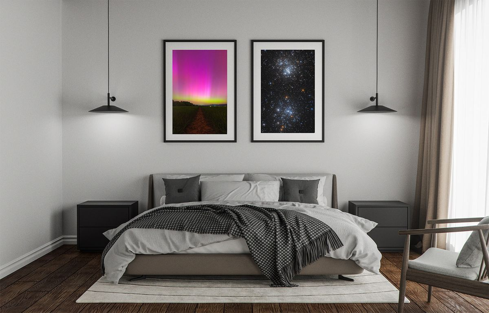
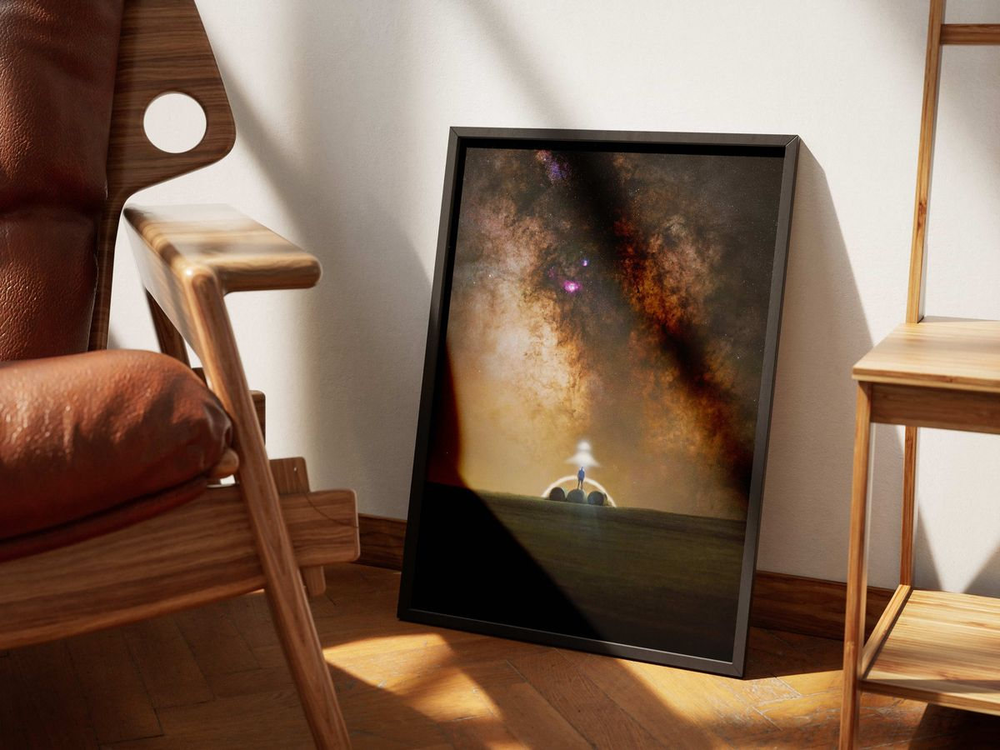
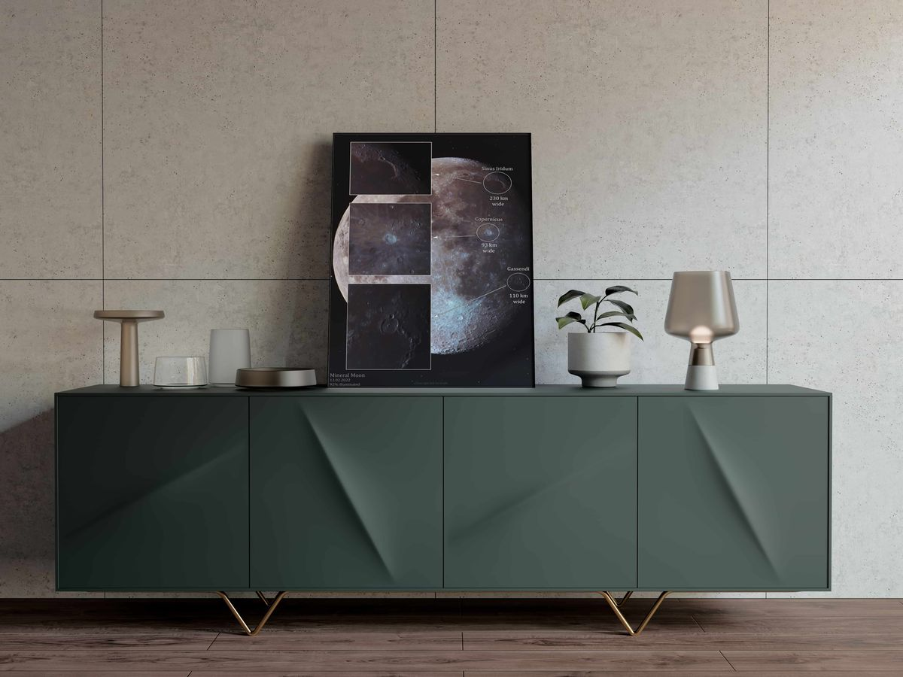
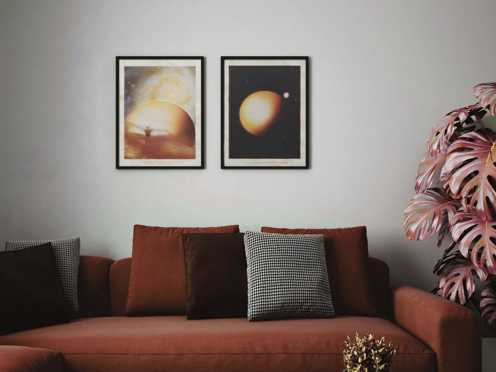
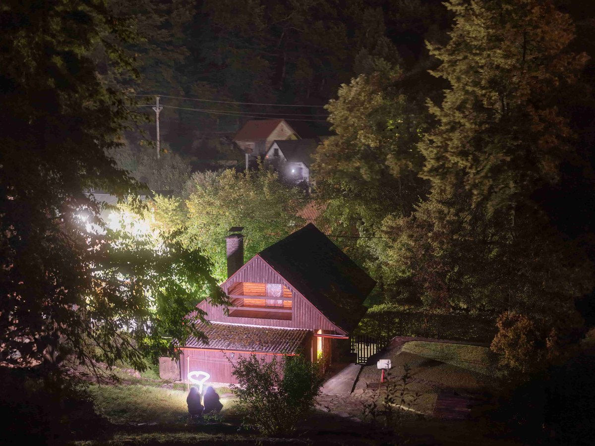

Fotenie
Vesmír, osobne
Rande pod Mliečnou cestou, rodinný portrét alebo zásnuby pod hviezdami. Fotka, akú nemá takmer nikto.
od 100 €
by
Hlboký vesmír a nočná krajina ako obrazy na stenu.
Za každou fotkou sú celé noci vonku pod hviezdami a desiatky hodín spracovania. Kliknite a pozrite sa, ako by vyzerala u vás doma.
Zaostrite na nekonečno
Krátka hra: zaostrite hmlovinu a získate zľavu na prvý obraz.
Pohľad do dávnej minulosti, kde sa rodia hviezdy a formujú galaxie.
Slovensko v noci, keď väčšina ľudí spí a nad hlavou sa rozsvieti Mliečna cesta.
Naši najbližší susedia. Krátery Mesiaca na dosah ruky.
Svety, ktoré zatiaľ nikto nenavštívil. Zatiaľ.
Fine Art papier, plátno, PVC alebo hliník. Takto by mohol vyzerať aj u vás.




Ako vyzerá Kúsok Nekonečna doma na stene.
Diár na rok 2027 pre každého, koho baví nočná obloha. Kalendár a týždne na všetko, čo plánujete, pri každom dni fáza Mesiaca. Každý mesiac otvára jedna moja fotka a krátky prehľad, čo sa v ňom dá vidieť na oblohe.
Hviezdopis
2027
Obal
nov spln✦ padajúce hviezdy noci bez Mesiaca
Tento týždeň na oblohe
Kúpiť batérie do čelovky ✓
Zavolať mame
V sobotu je nov, ísť za mesto
Zobrať deku a termosku
Večer pod hviezdami
Dátum
Kde som bol(a)
S kým
Čo som videl(a)
Ako jasná bola obloha ☆ ☆ ☆ ☆ ☆
Padajúca hviezda áno nabudúce
Vo vnútri kód na 15 % zľavu na obraz z galérie. Ku každej predobjednávke záložka s mojou fotkou.
Zápisník
34 €
Pri predobjednávke 29 €
Edícia s obrazom
54 €
Pri predobjednávke 49 €
Podpísaný zápisník a tlač A4 fotky podľa vášho výberu
Cesta do tlače0 z 10
Hviezdopis pošlem do tlače, keď sa nazbiera 10 predobjednávok. Ak sa ich do 15. novembra nenazbiera, vrátim vám celú sumu.
Fotenie pod hviezdami, nočné zábery nehnuteľností a mentoring. Poďte so mnou von, keď sa zotmie.
Fotenie
Rande pod Mliečnou cestou, rodinný portrét alebo zásnuby pod hviezdami. Fotka, akú nemá takmer nikto.

Nehnuteľnosti
Chata, penzión alebo hotel pod nočnou oblohou. Pre Airbnb, Booking aj vlastný web.
Mentoring
Individuálne, od výberu techniky až po vašu prvú vlastnú fotku Mliečnej cesty.
Obraz podľa vlastného výberu, večer pod hviezdami alebo zápisník na celý rok. Darček, na ktorý sa nezabúda.
Čo je dnes vidieť nad Slovenskom, kedy je tma a ktoré noci sa oplatí ísť von.
Nočná obloha dnes
Pripomenúť: Google iný kalendár
(Fotenia plánujem okolo novu, keď je obloha najtmavšia.)
Čo je nad vami
Mapa sa načítava.
Moje snímky na oblohe
Mesiac a planéty
Pohľad hore: stred mapy je nad hlavou a východ je vľavo. Planéty sú vypočítané do konca roka 2028.
Hviezdny kalendár
Všetko vo výbere: stiahnuť do kalendára (.ics)
Termíny nov a spln sú vypočítané. Meteorické roje majú vrchol v rovnakých dňoch každý rok, rušenie Mesiacom sa počíta pre vrcholnú noc.
Svetlo z hviezd k nám letí celé roky. Keď je hviezda 30 svetelných rokov ďaleko, svetlo, ktoré z nej dnes vidíte, sa na cestu vydalo pred 30 rokmi. Zadajte dátum, ktorý je pre vás dôležitý, napríklad deň narodenia alebo svadby. Nájdem hviezdu, ktorej svetlo sa vydalo na cestu práve vtedy a dnes dopadá na Zem. Ukážem vám aj hviezdy, ktorých svetlo z toho dňa k nám ešte len letí.
Fotenie s hviezdou v zábere
Výpočet platí pre oblohu nad Slovenskom.
Pár faktov, ktoré ma na vesmíre fascinujú.
Svieti na vlnovej dĺžke 656 nanometrov.
Volám sa Matej. Astrofotografia je pre mňa vášňou a srdcovou záležitosťou. Je o precíznom zbere fotónov, kalibrácii a hodinách spracovania dát, ktoré sú pre bežné oko neviditeľné.
Vždy zachytávam vesmír v podobe, ktorú si môžete zavesiť na stenu a každý deň sa stratiť v jej nekonečne.
Tlačím výhradne na kvalitné archívne materiály. Fine Art papier má životnosť cez 100 rokov. Pre moderný vzhľad odporúčam tlač na PVC dosku alebo hliníkovú dosku (Dibond), ktorá nepotrebuje rám.
Štandardná doba dodania je 7 až 14 dní. Každý obraz prechádza kontrolou kvality a je bezpečne zabalený.
Hviezdopis tlačím v malom náklade, keď sa nazbiera aspoň 10 predobjednávok. Ak sa ich do 15. novembra nenazbiera, vrátim vám celú zaplatenú sumu. Zápisníky odosielam v prvom decembrovom týždni, takže pod stromček to stihnú. Pri objednávke stačí zaškrtnúť, že ide o darček, a pribalím kartičku s vaším venovaním. Za 4 € ho zabalím aj do darčekového papiera so stuhou. Zápisník môžete vložiť do košíka spolu s obrazom a poštovné zaplatíte len raz.
Poštovné je 5 € za celú objednávku, bez ohľadu na počet obrazov či zápisníkov. Darčekový poukaz posielam elektronicky, ten je bez poštovného.
Pre začiatočnícky balík Štart nie je technika podmienkou, všetko si vysvetlíme na tej mojej. Pre Masterclass je potrebný vlastný fotoaparát a statív.
Posúvajte krúžok, kým nebude hmlovina ostrá. Získate zľavu na prvý obraz.
Hmlovina je zatiaľ rozmazaná.